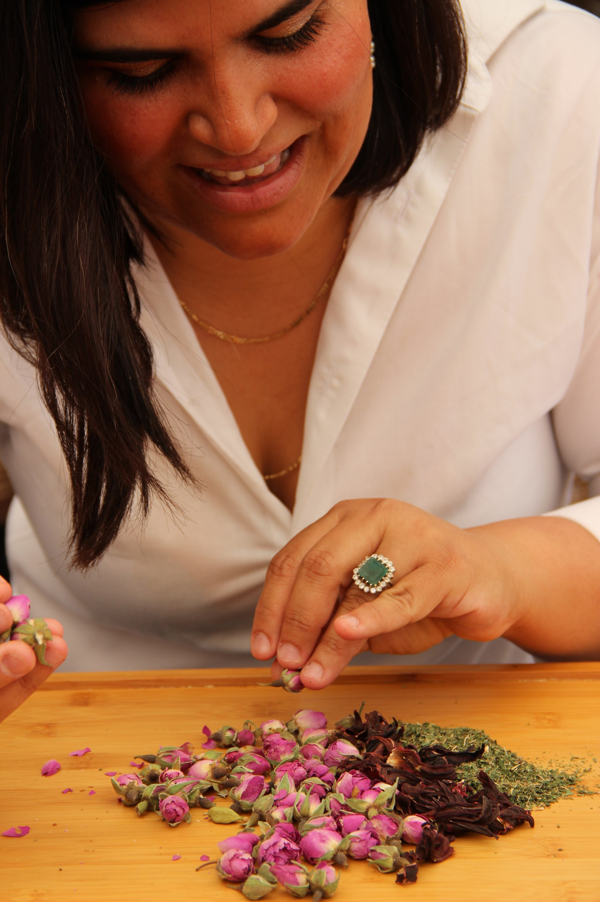

ליווי אישי לבריאות, עיכול ופריון

למידע על תהליך הטיפול והאבחון
קביעת פגישת אבחון וייעוץ
בקליניקה שלי בתל אביב, אני מלווה נשים וגברים בתהליכי שינוי עמוקים המבוססים על חוכמת האיורוודה. הגישה שלי משלבת אבחון דופק מסורתי עם כלים פרקטיים לשיפור איכות החיים והבריאות.
תחומי התמחות מרכזיים:
תמיכה טבעית בתהליכי פוריות
ליווי מקצועי המבוסס על תזונה מדויקת וצמחי מרפא לשיפור סיכויי הקליטה ולתמיכה בהליכים רפואיים.
- • שיפור איכות הביציות והזרע
- • תמיכה בטיפולי פוריות (IVF, IUI)
- • ליווי ממוקד לתהליכי שימור פוריות
- • איזון הורמונלי וחיזוק המערכת
מערכת העיכול והחיסון
שיקום מערכת העיכול וחיזוק החוסן הגופני דרך תפריט תזונה טיפולי וצמחי מרפא.
- • פתרון לבעיות עיכול וספיגה
- • טיפול בנפיחות וחוסר נוחות
- • חיזוק מערכת החיסון
- • שיפור איכות השינה והאנרגיה
חשוב לי להדגיש: כל תהליכי הליווי בקליניקה, לרבות התמיכה בטיפולי פוריות (IVF, IUI) ושימור פוריות, מבוססים על תזונה מותאמת אישית בשילוב צמחי מרפא וחליטות ייחודיות לשיקום ואיזון הגוף.